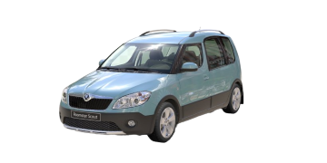

Historie modelu



Škoda Roomster je automobil z produkce firmy Škoda Auto. Jedná se o kompaktní rodinný vůz, někdy také označovaný jako MPV. Na českém trhu se vůz začal prodávat 1. června 2006.
Sériový model Škoda Roomster, který byl představen v březnu 2006 na Ženevském autosalonu vychází ze stejnojmenné studie, která byla představena na podzim 2003 na frankfurtském autosalonu (IAA).
V případě Roomsteru Škoda Auto upustila od platformové koncepce, zavedené s výběhem modelu A02 - Škoda Felicia, což byla koncepce, která razila heslo „jedna platforma pro více vozů“. Typickým příkladem je například platforma A4 ze Škody Octavie první generace, která se montovala i na VW Golf IV, Seat Toledo II, Audi A3, atd. Cílem je podle vnitrokoncernové politiky zvětšit míru odlišení jednotlivých koncernových vozů v rámci třídy.
Od roku 2007 je v nabídce kromě přepážky N1 také užitková verze Roomsteru s názvem Škoda Praktik.
V roce 2010 vůz prošel faceliftem.
Roku 2014 se sice začalo spekulovat o ukončení výroby v průběhu tohoto roku,[2] nicméně k tomu nakonec nedošlo automobil se vyráběl až do 30. dubna 2015, kdy sjel z výrobní linky v Kvasinách poslední kus.
Vůz Škoda Roomster byl vyráběn ve výrobním závodě v Kvasinách. Vyráběl se ve třech směnách (od roku 2007) a každých 6 minut vyjel z linky jeden vůz – denně 120-136 vozů. Za první měsíc prodeje (červen 2006) bylo zákazníkům dodáno 843 vozů. V roce 2011 byla výroba přesunuta do Vrchlabí a od roku 2013 se opět vrátila do závodu v Kvasinách.
Motory
Model Roomster disponoval bohatou nabídkou motorů včetně stále velmi oblíbeného motoru 1,9TDI z koncernu VW, který ale již skončil s modernizací modelu.
V této této době přišel nástup malých benzínových turbomotorů. Bohužel řada motorů se nemohlo chlubit přílišnou spolehlivostí. Verze combi mohla mít tovární úpravu na LPG.
Škoda Roomster
| typ motoru |
roky výroby |
výkon |
| 1,2 htp | 2006 - 2007 | 47KW |
| 1,2 htp | 2000 - 2015 | 51KW |
| 1,2 TSI | 2010 - 2015 | 63KW |
| 1,2 TSI | 2010 - 2015 | 77KW |
| 1,4 16V | 2006 - 2015 | 63KW |
| 1,6 16V | 2006 - 2015 | 77KW |
| 1,2 TDI | 2010 - 2015 | 55KW |
| 1,4 TDI | 2006 - 2010 | 51KW |
| 1,4 TDI | 2006 - 2010 | 59KW |
| 1,6 TDI | 2010 - 2015 | 66KW |
| 1,6 TDI | 2010 - 2015 | 77KW |
| 1,9 TDI | 2006 - 2006 | 74KW |
| 1,9 TDI | 2006 - 2010 | 77KW |
| 1,4 LPG | 2010 - 2015 | 63KW |
recenze